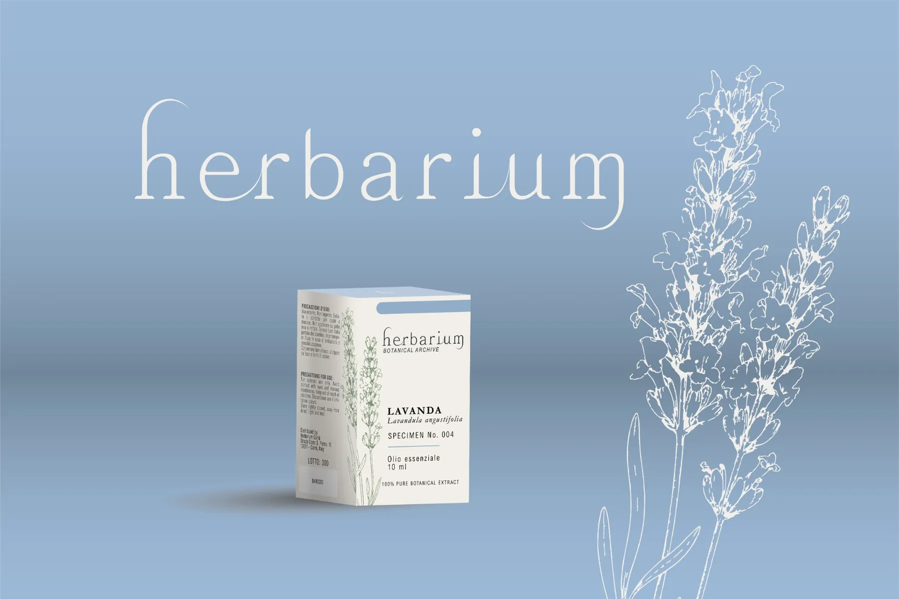
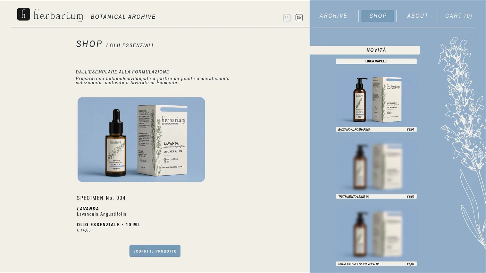
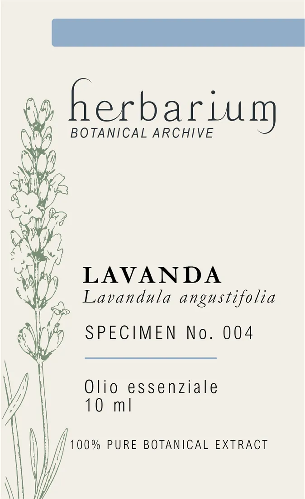
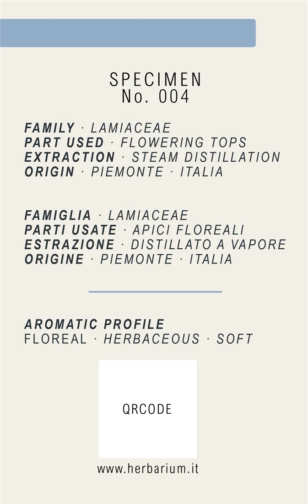
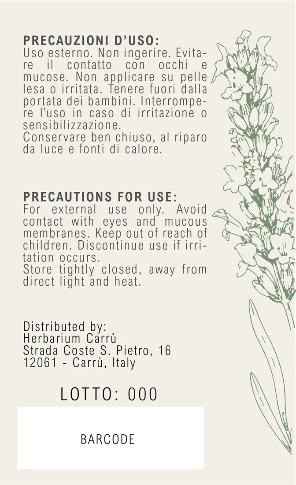
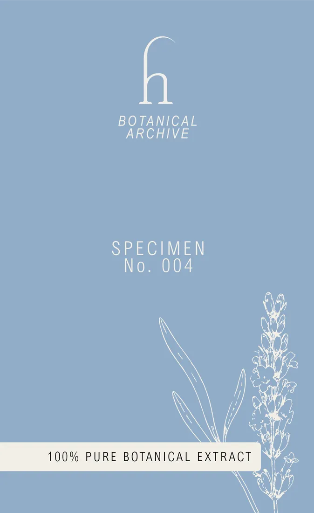
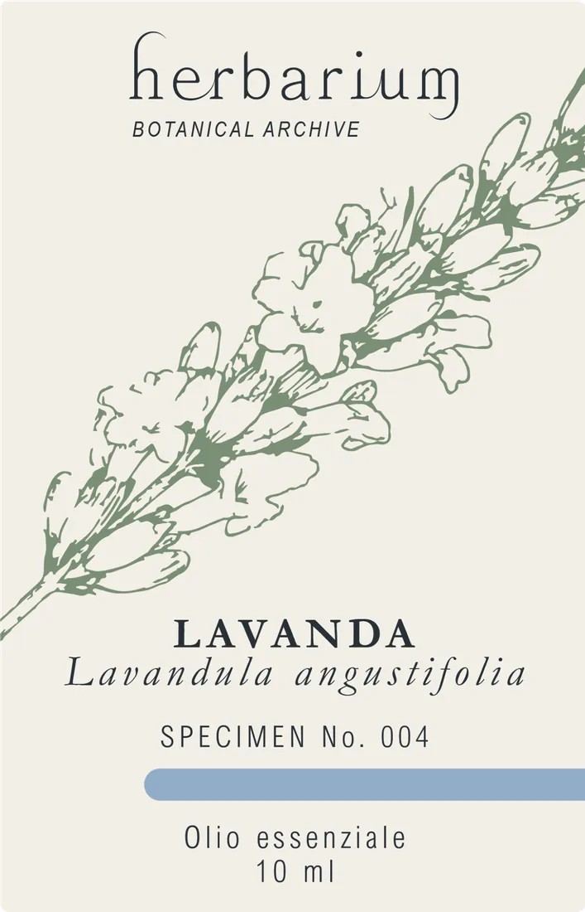

Herbarium
L'idea di partenza non era una semplice linea di prodotti, ma un archivio botanico. Ogni pianta viene trattata come un esemplare da erbario, con numero di specimen, famiglia, parte utilizzata, metodo di estrazione e origine. L'etichetta diventa così una scheda di catalogo, non una vetrina pubblicitaria.The starting point was not simply a product line, but a botanical archive. Each plant is treated as a herbarium specimen, with a specimen number, family, part used, extraction method and origin. The label becomes a catalogue entry rather than an advertisement.
Le illustrazioni botaniche usano un tratto costante in verde salvia, abbastanza pulito da funzionare sia nella stampa a un colore sull'astuccio sia in piccolo sulla boccetta. Italiano e inglese convivono sulla stessa griglia senza appesantire la lettura.The botanical illustrations use a consistent sage-green line, clean enough to work both as a single-colour print on the box and at a small scale on the bottle. Italian and English share the same grid without making the layout feel crowded.
Lo stesso sistema continua anche online: la pagina shop riprende la logica dello schedario, mentre la fascia blu distingue in modo netto il catalogo dalla parte commerciale.The same system carries over online: the shop page follows the logic of a filing system, while the blue band clearly separates the catalogue from the commercial content.
- RuoloRole
- Identità, packaging, illustrazione, interfacciaIdentity, packaging, illustration, interface
- ConsegnaDeliverables
- Marchio, sistema etichetta e astuccio, tavole botaniche, pagina shopLogo, label and box system, botanical illustrations, shop page

MaterialiMaterials Trascina o scorriDrag or scroll






